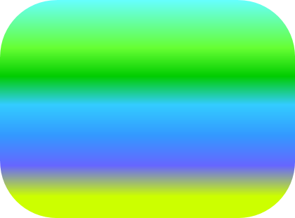
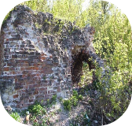
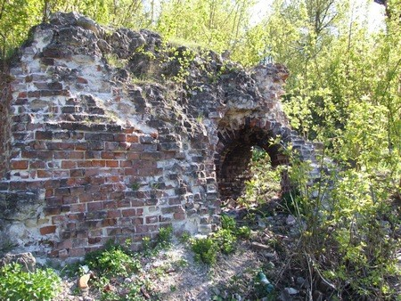

Зачатьевская башня

Информация о Кремле
Застройка территории
Фотографии
Информация для связи с разработчиком

Мобильный телефон:
8-920-295-80-52
gnester@mail.ru
или
gnester95@gmail.com
Рабочий email:


© 2014 Кремль в Н.Новгороде
Сайт разработан студентом 1 курса НГТУ Им. Р.Е.Алексеева
Нестеренко Евгением Андреевичем
Подписаться на рассылку


Башни Кремля
Интерактивная
карта Кремля
Зачатьевская башня находилась между Белой и Борисоглебской башнями, на самом нижнем участке кремлёвского холма, обращённого к берегам Волги. Башня Зачатия строилась в 1500 — 1514 годах, одновременно с возведением ныне существующих стен Нижегородского кремля. Имя сооружению дал близлежащий женский монастырь, названный Зачатьевским в честь зачатия Святой мученицы Анны. Зачатьевская башня РоссияЭта обитель была основана под кремлёвским холмом, на берегу Волги по приказу супруги князя Андрея Константиновича. Монастырь существует и поныне (возрождён в 2004 году) под именем Крестовоздвиженский. В архивах XVII века Зачатская башня упоминается как Белая «четвероугольная», что указывает на то, что сооружение наряду с кирпичной кладкой имело и белокаменные части.
Есть у башни и третье имя «Живоносновская», происходящее от названия Живоносного источника, вода которого, по преданию, исцеляла болезни глаз. Зачатьевская башня представляла собой квадратное двухъярусное сооружение, увенчанное тёсовой кровлей. По высоте фортификация не превосходила крепостные стены. Из-за того, что подгорный участок часто подвергался оползням и потому, что Волга принадлежала русским, кремлёвские зодчие не придавали здешним укреплениям важного оборонительного значения. Зачатьевская башня использовалась в качестве проезда (выхода) из кремля — через башенные ворота можно было быстро выйти к Волге. В связи с аварийным состоянием башни уже в 1622 году ворота не использовались и были «заставлены тыном стоячим». Около 1750 года башня сдвинулась оползнем к Волге и обрушилась. Вскоре кремль утратил значение военной крепости, и тогда нижегородский губернатор И. М. Ребиндер переоборудовал башни под хозяйственные помещения, склады боеприпасов и продовольствия, архивы и пр. Остатки Зачатьевской башни разобрали, а на её месте устроили «Сход к Живоносному источнику» в виде небольших ворот с двумя караульными помещениями по бокам. В 1830 годах «Сход к Живоносному источнику», смещённый оползнем, засыпали.
В 1961 году реставраторы обнаружили куски древней Зачатьевской башни, отколовшиеся от основного массива. Нижегородский архитектор Святослав Агафонов, анализируя найденные детали и гравюры XVI века, воссоздал исторический облик башни в чертежах. В 2011 году власти Нижнего Новгорода, используя проекты Агафонова, принялись за восстановление древнего сооружения. На воссоздание Зачатьевской башни и прилегающих кремлёвских стен региональное правительство выделило 150 миллионов рублей. По сообщению ГТРК «Нижний Новгород» от 27. 04. 2012, Зачатьевскую башню восстановят к 4 ноября 2012 года, к 400-летнему юбилею нижегородского ополчения. Именно тогда Нижегородский Кремль приобретёт облик законченного сооружения, представ перед горожанами и туристами в том виде, каким его задумал гениальный зодчий.
20.03.2014

